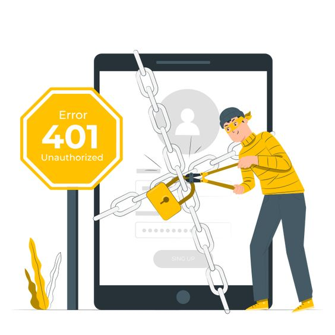
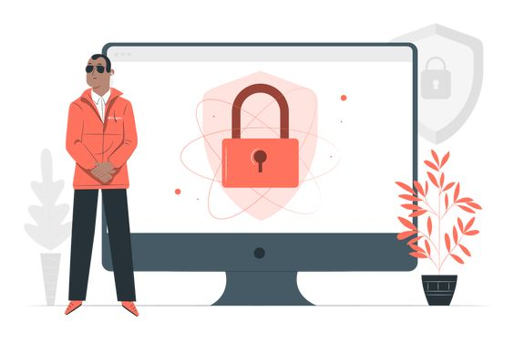

Интернет-безопасность: определение и описание
Распространенные угрозы интернет-безопасности
Как защитить личные данные в сети
Безопасность мобильных устройств в интернете
Интернет-безопасность – это безопасность действий и транзакций, совершаемых в интернете. Интернет-безопасность входит в более широкие понятия, такие как кибербезопасность и компьютерная безопасность, и включает безопасность браузера и сети, а также правильное поведение в сети. Проводя значительное время в сети, можно столкнуться со следующими угрозами интернет-безопасности:
Взлом – получение неавторизованными пользователями доступа к компьютерным системам, учетным записям электронной почты и веб-сайтам.
Вирусы и вредоносные программы, которые могут повредить данные и сделать системы уязвимыми для других угроз.
Кража личных данных, например, личной и финансовой информации злоумышленниками.
Частные лица и организации могут защититься от подобных угроз, используя приемы интернет-безопасности.
Чтобы сохранить конфиденциальность и безопасность в интернете, важно знать о различных типах интернет-атак. Ниже описаны распространенные угрозы интернет-безопасности.
Фишинг – это кибератака с использованием поддельных писем. Злоумышленники пытаются обмануть получателей электронной почты, убедив их в подлинности и актуальности сообщения. Например, они маскируют письма под запросы из банка или сообщения от коллег, чтобы пользователи переходили по ссылкам или открывали вложения. Цель атаки состоит в том, чтобы обманным путем заставить пользователей раскрыть личную информацию или загрузить вредоносные программы.
Фишинг – одна из старейших угроз интернет-безопасности, возникшая еще в 1990-х годах. Он остается популярным и сегодня, поскольку является одним из самых дешевых и простых способов кражи информации. В последние годы фишинговые сообщения и используемые методы становятся все более изощренными.
Злоумышленники всегда стремятся использовать уязвимости частной сети или системы для кражи конфиденциальной информации и данных. Технология удаленного доступа предоставляет им дополнительные возможности. Программное обеспечение для удаленного доступа позволяет пользователям получать доступ к компьютеру и управлять им удаленно. Его использование значительно выросло в период пандемии, когда все больше людей работают удаленно.
Протокол, позволяющий пользователям удаленно управлять компьютером, подключенным к интернету, называется RDP – протокол удаленного рабочего стола. Многие компании, независимо от размера, широко используют RDP, поэтому высоки шансы недостаточно надежной защиты сети. Злоумышленники используют различные методы выявления и эксплуатации уязвимостей RDP, чтобы получить полный доступ к сети и ее устройствам. Они могут как самостоятельно осуществлять кражу данных, так и продавать учетные данные в даркнете.
Термин вредоносные программы охватывает все программы: вирусы, черви, трояны и прочие, которые злоумышленники используют для нанесения ущерба и кражи конфиденциальной информации. Любое программное обеспечение, предназначенное для повреждения компьютера, сервера или сети, может расцениваться как вредоносное.
Термин «вредоносная реклама» описывает онлайн-рекламу, распространяющую вредоносные программы. Интернет-реклама – это сложная экосистема, включающая веб-сайты рекламодателей, рекламные биржи, рекламные серверы, сети ретаргетинга и сети доставки контента. Злоумышленники используют эту сложность для размещения вредоносного кода там, где рекламодатели и рекламные сети не всегда могут его обнаружить. Пользователи, взаимодействующие с вредоносной рекламой, могут загрузить вредоносные программы на свое устройство или перейти на вредоносные веб-сайты.
Программы-вымогатели – это вредоносные программы, блокирующие использование компьютера или доступ к определенным файлам на компьютере, пока не будет уплачен выкуп. Они часто распространяются как троянские программы – вредоносные программы, замаскированные под легальные. После установки программа-вымогатель блокирует экран системы или определенные файлы до тех пор, пока злоумышленники не получат выкуп.
Для сохранения анонимности злоумышленники обычно требуют платежи в криптовалютах, например, биткойнах. Стоимость выкупа варьируется в зависимости от программы-вымогателя и курса обмена цифровых валют. Однако злоумышленники не всегда разблокируют зашифрованные файлы после получения выкупа.
Количество атак программ-вымогателей растет, продолжают появляться новые варианты программ-вымогателей. Наиболее обсуждаемые программы-вымогатели включают Maze, Conti, GoldenEye, Bad Rabbit, Jigsaw, Locky и WannaCry.
Термин ботнет означает сеть компьютеров, специально зараженных вредоносным ПО с целью выполнения автоматических задач в интернете без разрешения и ведома владельцев этих компьютеров.
Компьютеры становятся частью ботнета так же, как и заражаются любой другой вредоносной программой: например, при открытии вложений электронной почты, загрузке вредоносных программ, посещении веб-сайтов, зараженных вредоносными программами. Ботнеты также могут передаваться с одного компьютера на другой по сети. Количество ботов (зараженных компьютеров) в ботнете зависит от способности заражать незащищенные устройства.
Использование публичных сетей Wi-Fi – в кафе, торговых центрах, аэропортах, отелях и ресторанах – сопряжено с определенными рисками, поскольку уровень безопасности в этих сетях часто низкий или защита полностью отсутствует. Это означает, что киберпреступники могут отслеживать действия пользователей в интернете и красть пароли и личную информацию. Другие опасности использования публичных сетей Wi-Fi включают:
Прослушивание сети – злоумышленники отслеживают и перехватывают незашифрованные данные при передаче по незащищенной сети;
Атаки типа «человек посередине» – злоумышленники взламывают точку доступа Wi-Fi и подключаются к процессу передачи данных между пользователем и точкой доступа с целью перехвата и изменения данных в процессе передачи;
Мошеннические сети Wi-Fi– злоумышленники создают приманку в виде бесплатной сети Wi-Fi для сбора личных данных. Точка доступа злоумышленника служит каналом для всех данных, передаваемых по сети.
Слежка за домашней сетью Wi-Fi не должна вызывать столько беспокойства, поскольку сетевое оборудование принадлежит вам. Но опасность, тем не менее, существует: в США провайдерам интернет-услуг разрешено продавать данные о пользователях. Хотя эти данные являются анонимными, сам факт сбора данных может вызывать беспокойство у тех, кто ценит конфиденциальность и безопасность в интернете. Использование VPN в домашней сети значительно усложняет отслеживание вашей онлайн-активности.
Чтобы обеспечить безопасность в интернете и защитить свои данные, можно следовать перечисленным ниже рекомендациям.
Многофакторная аутентификация – это способ проверки подлинности, при котором для доступа к учетной записи используется два или более метода проверки. Например, вместо простого запроса имени пользователя или пароля при многофакторной аутентификации запрашивается дополнительная информация:
Дополнительный одноразовый пароль, который серверы аутентификации веб-сайта отправляют на телефон или адрес электронной почты.
Ответы на личные вопросы безопасности.
Отпечаток пальца или другая биометрическая информация, например голосовые данные или лицо.
Многофакторная аутентификация снижает вероятность кибератаки. Чтобы защитить онлайн-аккаунты, рекомендуется по возможности использовать многофакторную аутентификацию. Для обеспечения безопасности в интернете можно также можете применять сторонние приложения проверки подлинности, такие как Google Authenticator и Authy.
Сетевой экран исполняет роль барьера между вашим компьютером и сетью, например интернетом. Сетевые экраны блокируют нежелательный трафик, а также помогают предотвратить заражение компьютера вредоносными программами. Часто сетевой экран входит в состав операционной системы или системы безопасности. Для обеспечения максимальной безопасности в интернете рекомендуется убедиться, что сетевой экран включен и настроено автоматическое обновление.
Браузер – это основной инструмент для выхода в интернет, он играет ключевую роль в обеспечении безопасности в интернете. Хороший веб-браузер должен быть безопасным и обеспечивать защиту от утечки данных. Фонд свободы прессы составил подробное руководство, описывающее плюсы и минусы безопасности основных веб-браузеров.
Надежный пароль помогает обеспечить безопасность в интернете. Он обладает следующими свойствами:
Длинный: минимум 12 символов, в идеале, даже больше.
Содержит заглавные и строчные буквы, а также специальные символы и цифры.
Не очевидный: в пароле не используются комбинации последовательных цифр (1234) и личная информация, которую может угадать тот, кто вас знает, например, дата рождения или имя домашнего животного.
Не содержит запоминающихся сочетаний клавиш.
Замена букв и цифр похожими символами, например, “P@ssw0rd” вместо “password”, сейчас уже не является эффективной мерой – злоумышленники умеют обходить такую замену. Чем сложнее ваш пароль, тем сложнее его взломать. Использование менеджера паролей позволяет создавать, хранить и управлять всеми паролями с помощью единой защищенной учетной записи.
Пароли необходимо хранить в секрете, никому не сообщать и нигде не записывать. Рекомендуется не использовать один пароль для всех учетных записей, а также регулярно менять пароли.
Антивирус, обеспечивающий защиту в интернете, очень важен для сохранения конфиденциальности и безопасности. Лучшие программы интернет-безопасности защищают от различных видов атак, а также обеспечивают безопасность данных в интернете. Очень важно обновлять антивирусное программное обеспечение. Большинство современных программ обновляются автоматически, что гарантирует защиту от последних угроз интернет-безопасности.
Wi-Fi роутер является важным компонентом интернет-безопасности. Он проверяет весь входящий и исходящий трафик и контролирует доступ к сети Wi-Fi, а также к телефонам, компьютерам и другим устройствам. Надежность роутеров улучшилась за последнее время, но можно предпринять дополнительные действия для усиления защиты в интернете.
Изменение заданных по умолчанию параметров роутера, таких как имя и учетные данные для входа – это важный первый шаг. Это поможет сделать сеть Wi-Fi менее уязвимой для злоумышленников, поскольку в этом случае роутер находится в активном управлении.
Чтобы повысить безопасность Wi-Fi роутера, можно отключить различные функции и настройки. Такие функции, как удаленный доступ, универсальная настройка сетевых устройств (Universal Plug and Play) и настройка защищенного Wi-Fi, могут использоваться вредоносными программами. Несмотря на то, что эти функции очень удобны, их отключение повысит безопасность домашней сети.
Лучший способ защитить данные в интернете при использовании общедоступного Wi-Fi – это виртуальная частная сеть (VPN). Технология VPN создает зашифрованный туннель между вашим устройством и удаленным VPN-сервером. Весь интернет-трафик передается через этот туннель, что обеспечивает защиту данных. Когда вы подключаетесь к общедоступной сети с помощью VPN, другие пользователи в этой сети не могут отследить ваши действия, что обеспечивает надежную защиту в интернете.
Смартфоны могут подвергнуться прослушиванию, особенно в результате взлома или получения root-доступа. Прослушивание позволяет злоумышленникам слушать ваши телефонные разговоры и читать сообщения. О взломе телефона могут свидетельствовать такие признаки, как необычный фоновый шум при звонках, быстрый расход заряда батареи телефона и странное поведение устройства.
Если телефон самопроизвольно включается и выключается и если на нем появляются приложения, которые вы не устанавливали, это может указывать, что кто-то еще имеет доступ к вашему телефону. Также признаками прослушивания телефона могут являться странные SMS-сообщения, содержащие набор искаженных букв и цифр, и счета за телефон на более высокие, чем обычно, суммы.
Подмену телефонных номеров обычно используют киберпреступники, пытающиеся убедить пользователя в том, что информация исходит из надежного источника. Они намеренно фальсифицируют отображаемый номер вызывающего абонента, чтобы выдать свой звонок за звонок с локального или знакомого пользователю номера.
Чтобы прекратить подмену телефонных номеров, выясните, есть ли у вашего оператора сотовой связи сервис или приложение для выявления и предотвращения спам-вызовов. Также для фильтрации вызовов можно использовать сторонние приложения, такие как RoboKiller или Nomorobo, однако они требуют предоставления личных данных.
Лучше всего не отвечать на звонки с неизвестных номеров. Не рекомендуется также отвечать на мошеннические звонки, поскольку в этом случае мошенники воспринимают вас как потенциальную жертву.
При появлении признаков шпионских приложений на вашем смартфоне проверьте установленные приложения. Удалите все приложения, в надежности которых вы не уверены или не помните, что устанавливали их.
Также может помочь обновление операционной системы телефона и более радикальные меры, например, сброс настроек телефона до заводских. Несмотря на то, что эти действия могут вызвать некоторые неудобства, рекомендуется их выполнить, если вы считаете, что ваш телефон был скомпрометирован.
Для выявления и удаления вирусов и вредоносных программ с телефонов Android можно использовать Kaspersky Internet для Android. В подробной статье об удалении вирусов с Android-устройств, объясняется, как это сделать вручную.
ЧЕМ ОПАСНЫ СОЦИАЛЬНЫЕ СЕТИ. ЧТО ДЕЛАТЬ, ЧТОБЫ НЕ СТАТЬ ЖЕРТВОЙ ВИРТУАЛЬНОГО МИРА?
9 советов, как справиться с кибербуллингом
Дети в интернете: 4 главных опасности и как от них защититьсяе
Дети и соцсети: безопасность и правила поведения. Что говорят исследователи
Взаимодействие с детьми в соцсетях: о чем важно помнить, когда ребёнок онлайн
Не надо демонизировать: почему видеоигры — это нормально
Нездоровая зависимость: дети в социальных сетях
Источники:
Кибербезопасность: как защитить личные данные в сети
Интернет-безопасность: что это и как сохранить безопасность в сети?
Источники изображений: